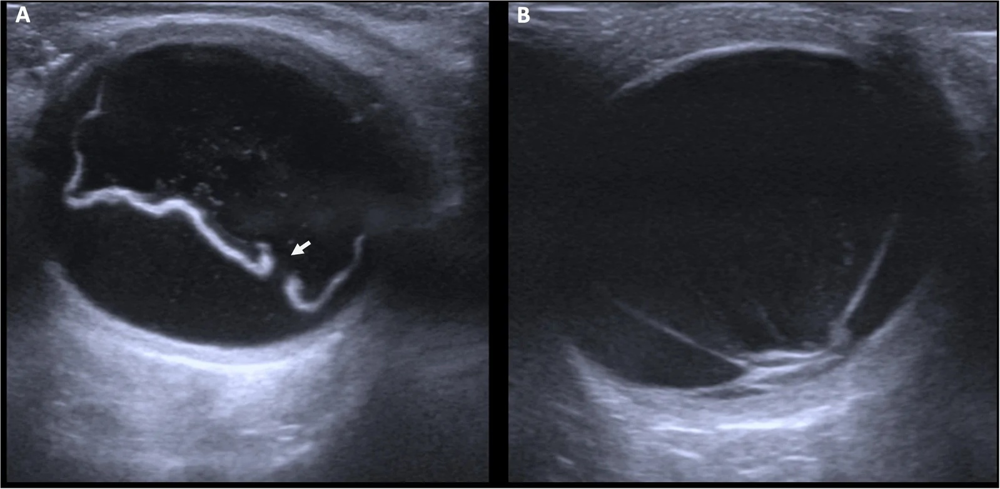
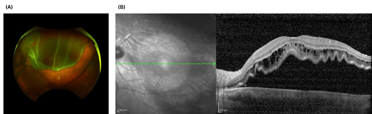
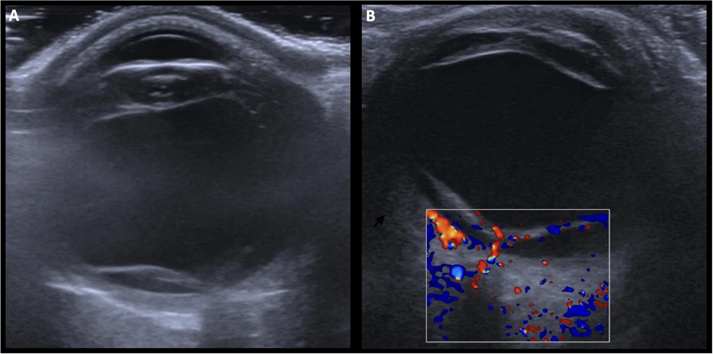
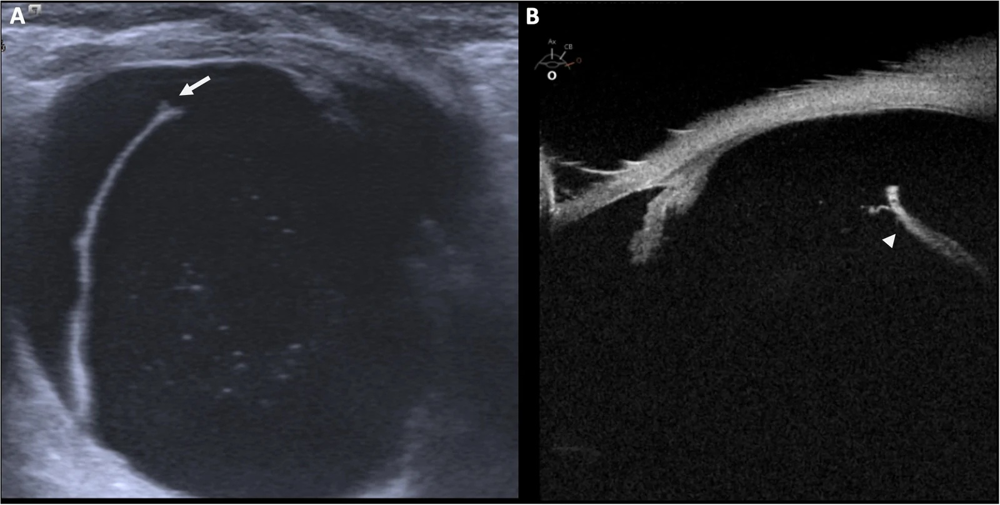

1487 — Bong võng mạc ở mắt giả thể thủy tinh sau phaco / Pseudophakic rhegmatogenous retinal detachment
Tags: pattern:bong-vong-mac pattern:lo-rach-ngoai-vi pattern:lo-sat-ora pattern:pvd pattern:co-keo-pvr pattern:gia-the-thuy-tinh vung:vong-mac vung:ora-serrata vung:hoang-diem vung:mat score:nguy-co protocol:sieu-am-B-scan protocol:UWF protocol:OCT protocol:PPV protocol:phaco incidentaloma:khong
Mức chắc chắn (certainty): tổng hợp y văn (literature synthesis) — dựng từ IRIS Registry 3.177.195 mắt (Ophthalmol Sci 2023, PMC10239011, CC BY-NC-ND 4.0), phân tích gộp 21 nghiên cứu/3.352.094 mắt (J Ophthalmol 2018, PMC6282121, CC BY 4.0), đoàn hệ Đan Mạch 129.362 mắt (Acta Ophthalmol 2026, PMC13353704, CC BY-NC-ND), tổng quan RRD (Wien Med Wochenschr 2025, PMC12031774, CC BY 4.0), RCT VIPER (Br J Ophthalmol 2017, PMC5583681, CC BY-NC; báo cáo 3, Graefes Arch Clin Exp Ophthalmol 2018, PMC6208723, CC BY 4.0), đoàn hệ PCR (J Ophthalmol 2015, PMC4677226, CC BY 4.0), ca hai mắt sau phaco (Cureus 2026, PMC12950224, CC BY 4.0) và tổng quan B-scan (Eur J Ophthalmol 2026, PMC13672910, CC BY 4.0). Nhóm không có bệnh nhân của mình; chỗ chưa đủ chắc ghi "chưa rõ". Không ghi tên tác giả — attribution dùng tạp chí + năm + PMCID.
Câu chốt: Phaco là phẫu thuật phổ biến nhất của nhãn khoa, và bong võng mạc (retinal detachment, RD) là biến chứng mù không hồi phục của chính phẫu thuật đó. Ba con số phải thuộc: (1) nguy cơ bong trong 1 năm sau phaco là 0,21% (6.690/3.177.195 mắt) — khoảng 1/500 ca, gộp 21 nghiên cứu là 1,167%; (2) thời điểm trung vị 139 ngày, 37,3% < 3 tháng, 59,9% < 6 tháng, nhưng đuôi rất dài (90% trong 14 năm); (3) rách bao sau (posterior capsule rupture, PCR) làm nguy cơ tăng HR 12,83, và ở nhóm PCR thì 9,4% bong, trung bình 79,8 ± 81,6 tuần sau mổ. Điều trị: PPV (pars plana vitrectomy) là lựa chọn chính; thêm vòng đai (encircling band) không cải thiện kết quả (79,0% vs 73,5%, p = 0,558), và 23/25G không thua 20G (87,7% vs 78,7%).
1. Tổng quan bệnh học – cơ chế hình ảnh
1.1 TẠI SAO mắt đã cấy IOL lại dễ bong võng mạc hơn
- Thay đổi giải phẫu – cơ học: thủy tinh thể (crystalline lens) dày ~4,5 mm, đường kính 9–10 mm; IOL chỉ dày ~1 mm. Lấy thể thủy tinh làm thể tích buồng dịch kính phía trước tăng, tiền phòng sâu hơn, dịch kính trôi ra trước và mất "nắp chặn" phía trước — màng hyaloid trước, bao sau và thể thủy tinh vốn là hàng rào cơ học giữ dịch kính tại chỗ. Dịch kính trở nên di động hơn, hóa lỏng (syneresis) nhanh hơn, và bong dịch kính sau (posterior vitreous detachment, PVD) xảy ra sớm hơn so với mắt còn thể thủy tinh.
- TẠI SAO PVD sau phaco lại tạo lỗ ở ngoại vi: khi hyaloid sau co và bóc khỏi võng mạc, chỗ dính chắc nhất còn lại là đáy dịch kính (vitreous base) — dải 360° bám qua ora serrata. Lực kéo tập trung ở đó sinh ra dialysis (rách dọc ora) hoặc lỗ có nắp nhỏ sát ora; lỗ ở đây nhỏ, bị IOL và đồng tử nhỏ che, nên chỉ thấy khi soi 360° có ấn sclera (hoặc UBM). Đây là lý do hình thái "kinh điển" của bong võng mạc giả thể thủy tinh khác bong võng mạc ở người trẻ còn thể thủy tinh (thường lỗ có nắp ở xích đạo).
- TẠI SAO PCR là yếu tố nguy cơ mạnh nhất trong mổ: rách bao sau kèm thoát dịch kính (vitreous loss) tạo cầu nối dịch kính–vết mổ, đưa tế bào viêm và sắc tố vào buồng dịch kính, đồng thời làm mất liên tục hàng rào bao sau. Hệ quả: HR 12,83 so với phaco thường; trong đoàn hệ 106 mắt PCR, 9,4% bong và trung bình 79,8 ± 81,6 tuần sau mổ (PMC4677226). Thử nghiệm cryo dự phòng 360° sau PCR cho giảm tương đối 68% / tuyệt đối 11%, NNT 9,4 nhưng p = 0,087 (chưa đủ mạnh để thành chuẩn).
- TẠI SAO YAG bao sau gây tranh cãi: Nd:YAG tạo sóng xung kích phá màng bao sau, có thể làm đứt màng hyaloid trước và kéo PVD đột ngột. Bằng chứng không đồng thuận: phân tích gộp 11 nghiên cứu (309 RD/65.117 mắt) cho RR 1,57 (1,17–2,12), nhưng phân nhóm phacoemulsification p = 0,95; đoàn hệ Phần Lan 17.688 mắt lại không thấy liên quan (HR 1,03; 0,57–1,88); nghiên cứu quốc gia Pháp 6.210 bệnh nhân ghi RD ≤ 0,5% trong 12 tháng, tăng ở nhóm YAG trong năm đầu. Kết luận thực dụng: YAG trong năm đầu sau phaco + mắt cận thị nặng/PCR là nhóm cần khám đáy mắt sau laser.
- Thời điểm là một phần của bệnh học: tổn thương không xảy ra "một lần rồi hết". Nguy cơ cao nhất trong 6 tháng đầu nhưng vẫn cao hơn dân số chung sau > 10 năm — nên tư vấn bệnh nhân nhá đèn/ruồi bay mới là cấp cứu, kể cả nhiều năm sau mổ.
1.2 TẠI SAO hình ảnh trông như vậy (B-scan – UWF – OCT)
- Siêu âm B-scan 10 MHz: bước sóng λ = 1.540 m/s ÷ 10 MHz ≈ 0,15 mm, độ phân giải trục ~0,1 mm, đủ tách võng mạc dày 0,25 mm khỏi dịch kính. Võng mạc là nhiều lớp tế bào đặc + biểu mô sắc tố nên trở kháng âm cao → trên B-scan là màng tăng âm dày, sáng rõ; dịch dưới võng mạc là nước trong → giảm âm (anechoic).
- Ba quy tắc định danh màng trên B-scan: (1) võng mạc luôn dính vào đĩa thị (retina cố định ở bờ đĩa) — màng bong mà đầu sau dừng ở đĩa thị = võng mạc; (2) màng dịch kính mỏng, tăng âm kém, không dính đĩa, và di động mạnh khi mắt đảo; (3) bong hắc mạc hình vòm, dày, không dính đĩa, lan tới thể mi, có thể "hôn nhau" (kissing choroid).
- TẠI SAO Doppler giúp: màng dịch kính không có mạch, võng mạc bong còn tuần hoàn; đặt cửa sổ Doppler màu lên màng nghi ngờ thấy dòng chảy trong màng = võng mạc (Hình 2B). Đây là mẹo hữu ích khi không phân biệt được PVD không hoàn toàn với bong võng mạc.
- TẠI SAO B-scan không thấy lỗ: độ phân giải ngang ~0,3–0,5 mm và lớp cắt dày, nên lỗ rách ngoại vi 0,2–0,5 mm gần như vô hình; B-scan chỉ trả lời "có bong hay không, bong bao nhiêu, có co kéo/PVR hay không" — không thay thế soi đáy mắt ấn sclera.
- OCT hoàng điểm: dịch dưới võng mạc giảm phản xạ vì là nước trong (không có tế bào tán xạ); võng mạc bong gấp nếp lớp ngoài, và dải ellipsoid zone (EZ)/màng giới hạn ngoài (ELM) mất liên tục là dấu tổn thương tế bào cảm quang. Macula-on hay macula-off quyết định mức khẩn và tiên lượng thị lực — đây là câu hỏi OCT phải trả lời trong mọi ca bong võng mạc.
- UWF (ultra-widefield) đáy mắt: vùng bong mất ánh hồng cam và mất hình ảnh mạch hắc mạc, bề mặt gấp nếp, bờ bong có đường phân giới (demarcation line) với võng mạc còn dính; ảnh UWF cho bản đồ toàn cảnh để chọn đường vào mổ và theo dõi.
- Vì sao mắt giả thể thủy tinh khó đọc hơn: IOL gây phản xạ dội (reverberation) và bóng âm phía trước trên B-scan; đục bao sau (PCO) và đồng tử nhỏ làm mờ ảnh ngoại vi; lỗ sát ora nằm sau bờ IOL. Vì vậy UWF phải kèm ấn sclera, và khi PCO dày không soi được thì B-scan + UBM là đường duy nhất.
1.3 Ngưỡng định lượng nằm lòng
| Chỉ số | Ngưỡng / giá trị | Nguồn |
|---|---|---|
| Bong võng mạc trong 1 năm sau phaco (≥ 40 tuổi) | 0,21% (6.690/3.177.195); rách võng mạc không bong 0,17%; một trong hai 0,37% | PMC10239011 |
| Nguy cơ gộp sau phaco | 1,167% (0,900–1,468), 21 nghiên cứu, 3.352.094 mắt | PMC6282121 |
| Tỉ lệ bong trong dân số phaco nói chung | 0,5–0,6%, cao 10× dân số chung; tới 44% người bong võng mạc là giả thể thủy tinh | PMC12031774 |
| Thời điểm (IRIS) | trung vị 139 ngày; 15,9% < 30 ngày, 37,3% < 90 ngày, 59,9% < 180 ngày | PMC10239011 |
| Thời điểm (gộp) | trung bình 23,12 tháng (17,79–28,45); nội kiểm: 25% ≤ 0,7 năm, 50% ≤ 3,1 năm, 75% ≤ 6,8 năm, 90% ≤ 14 năm | PMC6282121 |
| Tuổi lúc phaco (so > 70) | 40–50 tuổi OR 8,61; 51–60 OR 5,87; 61–70 OR 2,59 | PMC10239011 |
| Giới nam | OR 3,15 (IRIS); HR 3,99 (đoàn hệ Phần Lan) | PMC10239011, 33423371 |
| Thoái hóa lattice | OR 10,53 (bong); OR 43,86 (rách) | PMC10239011 |
| Cận thị cao | OR 1,20; trục nhãn cầu ≥ 26 mm + nam: HR 16,3 (11,8–22,5) | PMC10239011, PMC13353704 |
| Trục nhãn cầu ≥ 26 mm, nam 40–59 tuổi | nguy cơ tích lũy 5 năm 9,40% (7,10–12,50) | PMC13353704 |
| Rách bao sau (PCR) | HR 12,83; bong 9,4%, trung bình 79,8 ± 81,6 tuần sau mổ | PMC12031774, PMC4677226 |
| Cryo 360° dự phòng sau PCR | giảm tương đối 68%, tuyệt đối 11%, NNT 9,4, p = 0,087 | PMC4677226 |
| YAG bao sau | gộp RR 1,57 (1,17–2,12) nhưng phân nhóm phaco p = 0,95; đoàn hệ Phần Lan HR 1,03 (0,57–1,88) | 34538778, 33423371 |
| Can thiệp: PPV ± vòng đai (VIPER, 257 ca) | 79,0% vs 73,5%, p = 0,558; 23/25G 87,7% vs 20G 78,7% (không thua) | PMC5583681 |
| Lỗ dưới (5h–7h) trong VIPER | 77,4% vs 57,1%, p = 0,301 (thêm đai không có ý nghĩa) | PMC6208723 |
| Thời gian tan khí | SF6: 1–2 tuần; C3F8: 6–8 tuần; dầu silicone tháo sau 3–6 tháng | PMC12031774 |
2. Mẫu hình + chẩn đoán phân biệt theo vị trí (gamut)
- Mẫu hình (pattern): mắt đã cấy IOL, bệnh nhân nhá đèn/ruồi bay mới rồi mất thị trường, đáy mắt có võng mạc bong với một hoặc nhiều lỗ — thường nhỏ, ở ngoại vi/ora — và dịch dưới võng mạc lan về hoàng điểm.
- Gamut theo vị trí (location):
- Ora serrata / dialysis: lỗ dọc bờ ora, do chấn thương hoặc sau phaco, hay gặp ở người cận thị trẻ; chỉ thấy khi ấn sclera hoặc UBM — đây là "lỗ giấu mặt" số 1 ở mắt giả thể thủy tinh.
- Ngoại vi sát xích đạo (12h/6h): lỗ có nắp nhỏ sau PVD; dễ bị IOL che khi đồng tử nhỏ.
- Vùng dưới (5h–7h): dịch tích theo trọng lực, khó tamponade; trong VIPER có 100/257 ca có lỗ dưới.
- Nhiều lỗ (≥ 4): 63/257 ca trong VIPER — lý do phải soi 360°, không dừng ở lỗ đầu tiên.
- Cực sau / hoàng điểm: lỗ hoàng điểm trên mắt cận thị nặng (myopic macular hole RD) là thực thể riêng — bong do lỗ hoàng điểm, xử trí PPV + bóc màng + chèn ép, không phải laser ngoại vi.
- Gamut theo cơ chế (mechanism): (1) PVD sau phaco (phần lớn); (2) PCR/thoát dịch kính; (3) YAG bao sau (tranh cãi); (4) cận thị trục dài/lattice; (5) chấn thương (dialysis).
- Nhóm KHÔNG do lỗ rách (phải loại trừ trước khi mổ): bong co kéo (TRD) do đái tháo đường/PVR; bong thanh dịch (exudative) do u hắc mạc, CSC, VKH; bong hắc mạc; tách lớp võng mạc (retinoschisis).

Hình A: bong võng mạc bóng nước, gấp nếp, mũi tên chỉ lỗ rách nguyên nhân ở ngoại vi; hình B: bong co kéo để đối chiếu. Ảnh minh họa hình thái chung, không phải mắt giả thể thủy tinh (bệnh nhân trong bài gốc có đục thể thủy tinh). Nguồn: Eur J Ophthalmol 2026 (PMC13672910), CC BY 4.0, nguyên bản.3. Bảng so sánh phân biệt (ma trận đối chiếu)
| Thực thể (entity) | Hình ảnh điển hình | Chốt vào (rule-in) | Chốt loại (rule-out) | Gợi ý xác nhận |
|---|---|---|---|---|
| Bong võng mạc giả thể thủy tinh (PRD) | Màng võng mạc tăng âm, dính đĩa thị, di động; lỗ nhỏ sát ora/xích đạo; có IOL + PCO | Màng dính đĩa thị + lỗ thấy khi ấn sclera + có IOL | Không có lỗ + màng dính đĩa nhưng dày, cứng, hình phễu → nghĩ PVR/TRD | UWF 360° ấn sclera, B-scan, SS-OCT hoàng điểm |
| Bong võng mạc mắt còn thể thủy tinh | Lỗ có nắp ở xích đạo, thể thủy tinh trong, PVD thường chưa hoàn toàn | Còn thể thủy tinh + lỗ có nắp điển hình | Có IOL + lỗ sát ora → PRD (bài này) | Soi đáy mắt; siêu âm sinh trắc nếu cần |
| Bong co kéo (TRD/PVR) | Màng dày, cứng, hình phễu kín, dính thành từng điểm, không di động; có màng xơ trên võng mạc | Phễu kín + màng xơ + không di động + tiền sử ĐTĐ/PVR | Bong bóng nước, di động, dính đĩa → RRD | B-scan động, OCT, lâm sàng |
| Bong hắc mạc (choroidal detachment) | Vòm dày, trơn, không dính đĩa, lan tới thể mi; có thể "kissing"; nhãn áp thấp | Không dính đĩa + hình vòm + nhãn áp thấp + sau mổ | Dính đĩa thị + gấp nếp → võng mạc | B-scan; phân biệt bằng vị trí bờ sau |
| Tách lớp võng mạc (retinoschisis) | Vòm mỏng, nhẵn, không di động, thường thái dương dưới; không có lỗ | Vòm mỏng + bờ nhẵn + không lỗ + thị trường tương ứng | Có lỗ + dịch lan tới hoàng điểm → RRD | OCT (tách lớp trong võng mạc), B-scan |
| Bong thanh dịch (exudative) | Dịch lan rộng, không lỗ, không trọng lực, có khối u/viêm bên dưới | Không lỗ + khối hắc mạc/viêm + dịch thay đổi theo bệnh nền | Có lỗ + bờ bong theo trọng lực → RRD | B-scan, OCT, FAF, siêu âm B |
| Bong dịch kính sau (PVD) đơn thuần | Màng mỏng, tăng âm kém, không dính đĩa, di động mạnh | Không dính đĩa + màng mỏng + không dịch dưới võng mạc | Màng dày, dính đĩa → võng mạc | B-scan + Doppler màu (có dòng trong màng) |

Hình A: ảnh ultra-widefield mắt trái — bong võng mạc bóng nước phía trên, võng mạc phía dưới còn dính, có đường phân giới rõ. Hình B: OCT hoàng điểm — võng mạc cảm giác nâng lên bởi dịch dưới võng mạc, các lớp ngoài gấp nếp, xác nhận đã bong hoàng điểm. Bệnh nhân giả thể thủy tinh (72 tuổi, cận thị nặng, bong 94 ngày sau phaco mắt này). Nguồn: Cureus 2026 (PMC12950224), CC BY 4.0, nguyên bản.4. Protocol chụp + hệ phân độ/điểm chuẩn hóa
4.1 Quy trình hình ảnh khi nghi bong võng mạc ở mắt giả thể thủy tinh
- Đáy mắt 360° có ấn sclera + UWF — bắt buộc, kể cả khi "chỉ nhá đèn". Ghi rõ vị trí theo giờ, số lỗ, kích thước ước tính (mm), bong hoàng điểm hay không.
- SS-OCT hoàng điểm — trả lời macula-on/off và đo chiều cao dịch dưới võng mạc (µm); là cơ sở quyết định mổ trong 24 giờ.
- B-scan 10 MHz — khi PCO dày, xuất huyết dịch kính, đồng tử nhỏ không soi được; đánh giá bong, màng co kéo, bong hắc mạc. Luôn dùng Doppler khi nghi PVD không hoàn toàn.
- UBM (ultrasound biomicroscopy) — khi nghi dialysis sát ora mà soi không thấy (Hình 3B).
- Chụp lại sau 1–2 tuần nếu nhá đèn/ruồi bay mới mà chưa thấy lỗ — không được kết luận "không có gì" chỉ sau một lần soi.
4.2 Ngưỡng thời gian và lựa chọn phẫu thuật
- Macula-on = cấp cứu: mổ < 24 giờ** cho kết quả thị lực cuối tốt hơn rõ so với **> 24 giờ.
- Macula-off vẫn là cấp cứu: mổ ngày 0–3 tốt hơn ngày 4–7; thời gian mất thị lực trung tâm là yếu tố dự báo duy nhất trong một nghiên cứu 2.074 ca.
- PPV là lựa chọn chính ở mắt giả thể thủy tinh (nhìn được ngoại vi, giải phóng co kéo, tìm lỗ sát ora). Vòng đai không mặc định: VIPER 257 ca cho 79,0% vs 73,5% (p = 0,558); nhóm lỗ dưới 77,4% vs 57,1% (p = 0,301); nhóm ≥ 4 lỗ 68,2% vs 72,4%.
- Cỡ dụng cụ: 23/25G không thua 20G (87,7% vs 78,7%) → chọn theo thói quen phẫu thuật viên, không vì "nhỏ hơn thì kém hiệu quả".
- Tamponade: SF6 cho lỗ trên nhỏ (tan 1–2 tuần); C3F8 khi có lỗ dưới (tan 6–8 tuần); dầu silicone khi PVR nặng, tháo sau 3–6 tháng.
- Dự phòng sau PCR: cryo/laser 360° là lựa chọn hợp lý (giảm tương đối 68%, NNT 9,4) dù bằng chứng chưa đạt ý nghĩa thống kê — quyết định theo từng mắt.
- YAG bao sau: chỉ làm khi PCO ảnh hưởng thị lực, dùng năng lượng tối thiểu, và khám đáy mắt sau laser ở người cận thị nặng, PCR cũ, hoặc YAG trong năm đầu.
flowchart TD
A[Nhá đèn hoặc ruồi bay mới ở mắt đã cấy IOL] --> B[Soi đáy mắt 360 độ có ấn sclera + UWF]
B --> C{Thấy võng mạc bong?}
C -->|Không| D[SS-OCT hoàng điểm + hẹn lại 1 đến 2 tuần]
C -->|Có| E{Môi trường trong?}
E -->|Không: PCO dày, xuất huyết dịch kính| F[B-scan 10 MHz + Doppler]
E -->|Có| G[SS-OCT: macula on hay off]
F --> G
G --> H{Macula on?}
H -->|Có| I[Mổ trong 24 giờ]
H -->|Không| J[Mổ trong 0 đến 3 ngày]
I --> K[PPV + laser + tamponade]
J --> K
K --> L{Lỗ dưới hoặc PVR?}
L -->|Lỗ dưới| M[C3F8 hoặc dầu silicone]
L -->|PVR nặng| N[Dầu silicone + bóc màng]
L -->|Lỗ trên nhỏ| O[SF6]
5. Biến thể bình thường và cạm bẫy
- "Đục bao sau che lỗ" — cạm bẫy số 1: PCO dày làm mờ ngoại vi; không được kết luận không có lỗ khi chưa soi 360° ấn sclera và chưa B-scan. Nếu vẫn không thấy lỗ mà võng mạc bong → mổ thăm dò + soi nội nhãn toàn bộ.
- IOL và đồng tử nhỏ: bờ IOL tạo phản xạ lóa và bóng che vùng 12h/6h sát ora; dùng đèn khe ấn sclera, UWF, hoặc UBM.
- PVD không hoàn toàn vs bong võng mạc trên B-scan: màng mỏng, không dính đĩa, di động mạnh = PVD; Doppler màu có dòng trong màng = võng mạc.
- Bong hắc mạc "hôn nhau": hình vòm hai bên gặp nhau giữa nhãn cầu, không dính đĩa; kèm nhãn áp thấp sau mổ — không phải bong võng mạc.
- Tách lớp võng mạc thái dương dưới: vòm mỏng, nhẵn, không có lỗ; điều trị khác hoàn toàn (theo dõi/laser bờ), mổ nhầm gây mất thị trường thêm.
- Tìm được một lỗ rồi dừng: 63/257 ca VIPER có ≥ 4 lỗ — luôn soi 360° trước khi kết luận.
- "Đã bong hoàng điểm rồi nên chờ" — sai: 0–3 ngày tốt hơn 4–7 ngày.
- Nhá đèn/ruồi bay sau YAG vài tuần: dễ bị coi là "viêm nhẹ sau laser"; phải soi đáy mắt tìm lỗ/PVD.
- Bong võng mạc dưới dầu silicone: khó thấy vì dầu trong suốt + phản xạ; dùng OCT qua dầu và soi ấn sclera, đừng tin "đáy mắt bình thường" trên ảnh UWF.
6. Tự lượng giá — Blind Quiz
Ca 1 — Nam 72 tuổi, cận thị nặng, 3 tháng sau phaco hai mắt. Nhìn mờ dần mắt trái, không đau.
- Gợi ý: mắt đã cấy IOL, PVD không có trước mổ; mắt phải đã bong 100 ngày sau phaco, mắt trái 94 ngày.
- Câu hỏi: mô tả dấu hiệu chính? Bong hoàng điểm chưa? 3 chẩn đoán phân biệt và dấu hiệu chốt?
Bấm để hiện đáp án (findings + chẩn đoán)
- Dấu hiệu: võng mạc bóng nước phía trên, đường phân giới với vùng còn dính ở dưới; OCT cho thấy dịch dưới võng mạc dưới hoàng điểm, lớp ngoài gấp nếp → đã bong hoàng điểm.
- Chẩn đoán: bong võng mạc có lỗ rách ở mắt giả thể thủy tinh (pseudophakic RRD) — cơ chế PVD sau phaco trên mắt cận thị nặng, không có PVD trước mổ.
- Phân biệt: bong thanh dịch (không lỗ, dịch không theo trọng lực) · bong hắc mạc (không dính đĩa, nhãn áp thấp) · tách lớp võng mạc (vòm mỏng, không lỗ).
- Xử trí: PPV + laser + tamponade; bong hoàng điểm nên mổ trong 0–3 ngày; mắt kia đã bong — khám mắt còn lại mỗi lần.
- Nguồn ảnh: Cureus 2026 (PMC12950224), CC BY 4.0.
Ca 2 — Nữ 68 tuổi, đục bao sau dày sau phaco 6 tháng, đột ngột "màn che" từ trên xuống. Không soi được đáy mắt.

- Câu hỏi: màng tăng âm này là võng mạc hay dịch kính? Dấu hiệu nào trên B-scan chốt? Doppler để làm gì?
Bấm để hiện đáp án (findings + chẩn đoán)
- Dấu hiệu: màng tăng âm dày, đầu sau dừng ở đĩa thị → bong võng mạc toàn bộ; hình B đặt Doppler màu thấy dòng chảy trong màng — chứng minh đây là võng mạc có tuần hoàn, không phải màng dịch kính.
- Chẩn đoán: bong võng mạc (ở mắt giả thể thủy tinh với PCO dày, đây là cách duy nhất để chẩn đoán).
- Vì sao B-scan không thấy lỗ: độ phân giải ngang 0,3–0,5 mm; lỗ ngoại vi 0,2–0,5 mm gần như vô hình → phải soi ấn sclera/UBM trong mổ.
- Nguồn ảnh: Eur J Ophthalmol 2026 (PMC13672910), CC BY 4.0.
Ca 3 — Nam 24 tuổi, cận thị −6 D, tiền sử chấn thương bóng vào mắt 2 tháng trước; nhìn mờ nửa dưới thị trường.

- Câu hỏi: tổn thương ở đâu? Vì sao không thấy PVD? Tại sao B-scan không thấy lỗ rách kiểu thông thường?
Bấm để hiện đáp án (findings + chẩn đoán)
- Dấu hiệu: hình A — võng mạc bong, đứt tại ora serrata (mũi tên) tạo dialysis, không có màng dịch kính; hình B — UBM xác nhận dialysis ở ora (đầu mũi tên).
- Chẩn đoán: bong võng mạc do dialysis ora sau chấn thương — hình thái hay gặp ở người trẻ cận thị và sau phaco có chấn thương nhẹ.
- Vì sao không có PVD: dialysis xảy ra ở đáy dịch kính do lực cơ học, không cần PVD — khác lỗ có nắp do PVD.
- Điều trị: PPV + laser/cryo hàng rào + tamponade (hoặc đai củng mạc ở ca chọn lọc); không chỉ laser bờ vì lỗ lớn sát ora.
- Nguồn ảnh: Eur J Ophthalmol 2026 (PMC13672910), CC BY 4.0.
Bài liên quan chéo
- 400 – Tổng quan Mắt & thị giác
- 1481 – Lỗ rách võng mạc cấp chưa bong: laser dự phòng hay theo dõi
- 1469 – Bong võng mạc có lỗ sau tiêm nội nhãn (IVARD)
- 1479 – Bong võng mạc thanh dịch (serous retinal detachment)
- 1480 – Đục thể thủy tinh sau bóc màng trước võng mạc (ERM)
- 445 – Bong võng mạc
Ảnh
- Tên file theo quy ước
1487_..._Modality_SourceID.jpg; nguồn + giấy phép từng ảnh ởimages/CREDITS.md. - Ảnh minh họa hình thái chung (không phải mắt giả thể thủy tinh) được ghi rõ trong chú thích để không gán sai bệnh nhân.
- Không dùng ảnh từ nguồn không rõ giấy phép; không crop/ghép ảnh CC BY-NC-ND.
Không dùng để chẩn đoán độc lập khi chưa có người hướng dẫn.